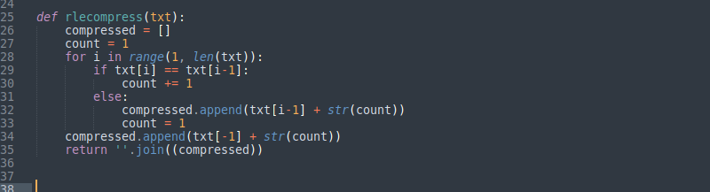
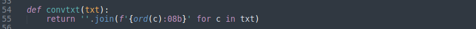
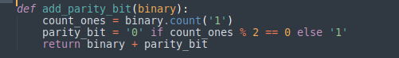
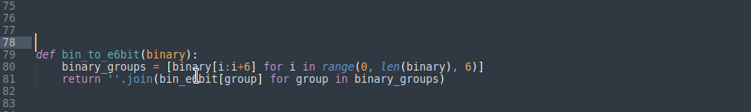
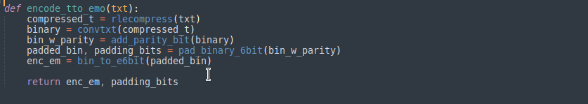
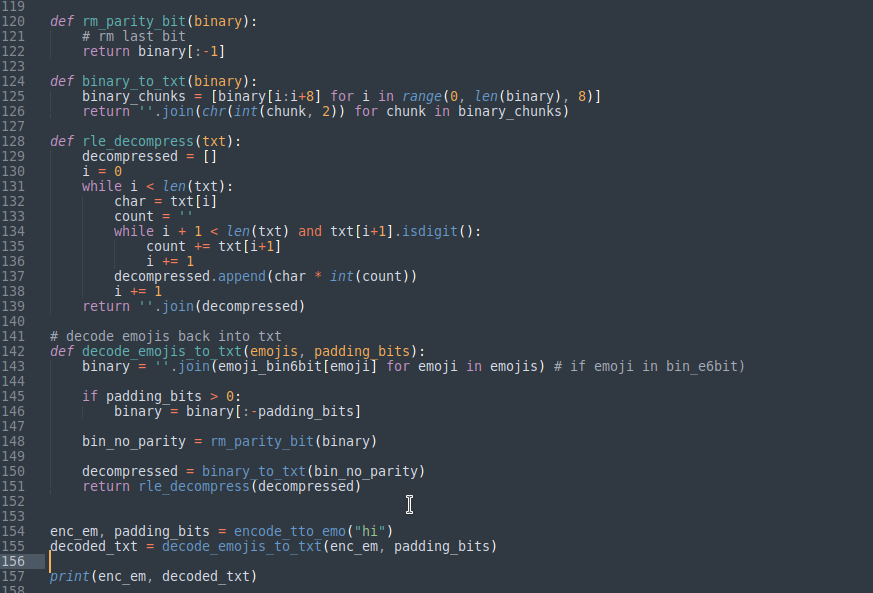
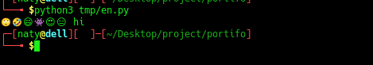

Choosing Random Number
what's up, Naty here, and today i wanna walk you through this crazy journey i had while building a emoji encoding system. This whole project started from a place of curiosity, and what do i always say? It’s all about learning, I got an idea followed it through hit some walls and boom got through'em and built something sick. That's how you learn in the real world.
The Idea
The idea wes to build encoding systems so i can convert strings into emojies and back, So i started with basics turning chars into binary but converting those 1s and 0s into emojis? That's something different. but this was not as simple as i thought. i ran into a bunch of problems and thats where the real learning began.
Now, initially i thought of mapping each bit to an emoji. But hey, it got super long real quick for example if i wanted to encode 'hi' just two characters it'd turn into like 16 bits. That's 16 emojis imagine a whole sentence that will be loong for no reason
So i thought how am i gone shorten this? i need some kind of compression trick to make the message shorter and less repetitive so i decided to move to binary patterns not just using a single bit but whole patterns of binary '111101' to map to specific emojis. That way, fewer emojis are repeated and it looks way cooler problem solvd right? No it come with its own probelm
Okay, so now lets say we're rolling with 5-bit or 6-bit chunks of binary instead of single bits. But then we hit another problem, what will happen when the length of your binary string isn't divisible by 5 or 6 you'd have left over bits hanging off the end with nowhere to go. for this i decided to add padding. add some extra zeros to fill it out and make it all fit nice. that way the message doesn't get corrupted. And for decoding, we’d know to just strip out the extra padding
Big brain move
I did some research and found out one of the best quality an encoding system can have is error detection. its neccesary becouse what if something goes wrong during decoding what if the message gets corrupted or the emoji gets swapped how do we detect that? thats when i came up with the parity bit did my homework leant about them,for you to read . Basically we add an extra bit at the end of our binary string to keep track of whether the number of 1s is odd or even. If something messes up the message, we can use that parity bit to catch it genius, right? i added it to the process like an extra layer of protection.
Compressing the Message
Again did my homework and learnt something new, This is where things really got smart, the Run-length encoding (RLE) is like when you look at a string of repeated characters and compress it instead of writing out 'AAAAA' we write A6 Simple, right? So, we applied this compression to our text before turning it into binary. It shortened the message, making the whole thing way more efficient and let me tell you, bro efficiency is everything when you're dealing with big chunks of data. You don’t wanna be sending entire essays in emoji form when you could boil it down to something short
so here is the plan compressing with RLE, add a parity bit, Pad the binary string then mapping to their group of emoji and reverse the process. so i wrote some py code to handle all of this You know me i'm no pro when it comes to coding, but I know how to put things together.
This is the RLE part it shortens the message by replacing repeated characters with the character and the count of how many times it repeats
This converting each character into its bin form
This addes a parity bit either 0 or 1, depending on whether the number of 1s in the binary string is odd or even.

To avoid leftover bits when converting binary into groups of 6 for our emojie mapping, we pad the binary string so that its length is divisible by 6. This ensures that every chunk of binary will cleanly map to an emoji
This will group the binary data into 6 bits getting it ready for mapping

Encoding part

This will try to decode the emoji string back into the original text by reversing the process. First, we map each emoji back to its 6 bit binary chunk, remove any padding, and strip off the parity bit before converting back to the original text
Now if we Try to convert 'hi' into emoji
Boom it works, but sometimes we hit another problem while decoding. the decoding process would throw a KeyError. Turns out, this happened when we were trying to decode an emoji that didn’t exist in our predefined set of 64 emojis. you can take it from this and add even more cool stuff set your own mapping and soo on
At the end of the day, this project was about learning. I didn't wake up one day knowing how to encode text into emojis. Nah, I learned as I went along. You face problem? You smash through it, fix the problem, and come out the other side smarter. That's how you get better.
That's it hope you enjoyed, peace out!